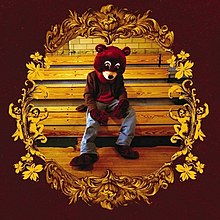
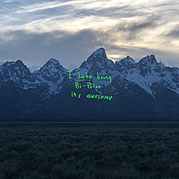

Discografia / Relesed
Questi sono gli album ufficialmente rilasciati:
- The College Dropout (2004)
- Late Registration (2005)
- Graduation (2007)
- 808s & Heartbreak (2008)
- My Beautiful Dark Twisted Fantasy (2010)
- Watch The Throne (2011)
- Yeezus (2013)
- The Life Of Pablo (2016)
- Ye (2018)
- Kid See Ghosts (2018)
- Jesus Is King (2019)
- Donda (2020)
- Vultures 1 (2024)
- Vultures 2 (2024)
| The College Dropout (2004) |  |
The College Dropout è l'album di debutto di Kanye West, pubblicato il 10 febbraio 2004 dalle etichette Roc-A-Fella e Def Jam Recordings. Registrato dal 1999 al 2003, l'album è prodotto principalmente da West, con collaborazioni di artisti come Jay-Z, Mos Def, Jamie Foxx, Ludacris e Syleena Johnson. West, inizialmente noto come produttore, ha creato un sound distintivo mescolando campionamenti di soul, R&B e gospel.
Temi:
Il disco affronta temi come l'autocoscienza, la religione, il razzismo, il materialismo e l'educazione, con testi che si distaccano dal tradizionale gangsta rap, privilegiando riflessioni personali e critiche alla società. Alcuni skit comici, come quello relativo al tema del "college dropout" (l'abbandono del college), esplorano l'idea di successo e fallimento in modo ironico.
Successo:
The College Dropout debuttò al secondo posto della Billboard 200, vendendo circa 441.000 copie nella prima settimana. Ha raggiunto oltre 3,4 milioni di copie vendute negli Stati Uniti e ha ottenuto un enorme successo commerciale. I singoli Through the Wire, Jesus Walks, All Falls Down e Slow Jamz sono stati particolarmente apprezzati, con All Falls Down e Slow Jamz che entrarono nella top 10 della Billboard Hot 100.
Produzione e Stili:
La produzione di West, caratterizzata da campionamenti di brani soul, R&B e gospel, è stata innovativa per l'epoca. L’uso di sped-up, pitch-shift, e cori gospel è un tratto distintivo del suo stile. West ha anche utilizzato la drum machine per creare una base musicale unica. Le collaborazioni con artisti come Mos Def, Jamie Foxx e Ludacris arricchiscono ulteriormente il suono dell'album.
Ricezione e Critica:
L'album ha ricevuto ampi consensi dalla critica, lodato per l'originalità delle produzioni e per il contenuto emotivo e riflessivo dei testi. The College Dropout ha vinto il Grammy Award per il miglior album rap nel 2005 e ha fatto parte di molte classifiche dei migliori album di tutti i tempi, tra cui quelle di Rolling Stone e Time.
Generi:
- Hip-Hop tradizionale
- Soul
- R&B
- Gospel
Per questo capolavoro, Kanye ha fatto uso di sample da molti altri artisti, eccone i brani utilizzati:
| We Don't Care | I Just Wanna Stop, (1997) | The Jimmy Castor Bunch |
| Graduation Day | Pomp and Circumstance - March No 1, (1901) | Edward Elgar |
| All Falls Down | Mystery of Iniquity, (2002) | Lauryn Hill |
| Spaceship | Distant Lover, (1979) | Marvin Gaye |
| Jesus Walks | Walk With Me, (1997) | The Arc Choir |
| (Don't Worry) If There's a Hell Below, We're All Going to Go, (1970) | Curtis Mayfield | |
| Never Let Me Down | Maybe It's the Power of Love, (1980) | Blackjack |
| Slow Jamz | A House Is Not A Home, (1981) | Luther Vandross |
| School Spirit | Spirit In The Dark, (1970) | Aretha Franklin |
| Two Words | Peace and Love (Amani Na Mapenzi): Movement IV(Encounter), (1970) | Mandrill |
| Through the Wire | Through the Wire, (1984) | Chaka Khan |
| Family Business | Fonky Thang, Diamon' Rang, (1972) | The Dells |
| Last Call | Mr. Rockefeller (1976) | Bette Midler |
Fun Fact:
Ascoltalo qui:
Torna su
| Late Registration (2005) |

|
Late Registration è il secondo album del rapper statunitense Kanye West, pubblicato il 30 agosto 2005 dalle etichette Roc-A-Fella Records e Def Jam Recordings. Registrato tra New York e Hollywood, il disco è stato co-prodotto da Jon Brion e include collaborazioni con artisti come Adam Levine, Lupe Fiasco, Jamie Foxx, Common, Jay-Z, Brandy Norwood e Nas.
Temi e Skit:
L'album, più elaborato rispetto al precedente The College Dropout, affronta temi personali e politici come povertà, razzismo, sanità e commercio dei diamanti insanguinati. Affrontando questioni sociali e intime, altera riflessioni personali a critiche sulla società americana. Gli skit comici, incentrati sulla fittizia "Broke Phi Broke", ironizzano sulla cultura materialista, rappresentando contraddizioni della vita contemporanea.
Successo:
Ha debuttato al primo posto della Billboard 200, vendendo 860.000 copie nella prima settimana, superando i 3,1 milioni negli Stati Uniti, e ottenendo il triplo platino dalla RIAA. Tra i singoli di successo, spiccano Touch the Sky,Heard 'Em Say e Gold Digger, quest'ultimo numero uno nella Billboard Hot 100.
Produzione e Stile:
West ha impiegato oltre un anno e 2 milioni di dollari per produrre l'album, lavorando con Jon Brion per integrare orchestrazioni complesse e strumenti insoliti come clavicembali e sintetizzatori vintage. Canzoni come Heard 'Em Say e Gold Digger combinano campionamenti, arrangiamenti sinfonici e ritmi hip-hop innovativi. Diamonds from Sierra Leone affronta il problema dei diamanti insanguinati, mentre Hey Mama è una dedica personale alla madre Donda.
Ricezione e Critica:
Late Registration ha vinto il Grammy Award per il miglior album rap ed è stato nominato miglior album dell'anno ai Grammy Awards 2006. Acclamato dalla critica, è stato incluso in numerose classifiche, tra cui il 118º posto nella lista dei "500 migliori album di tutti i tempi" di Rolling Stone.
In conclusione, Late Registration è un’opera ambiziosa che ha ridefinito i confini del pop rap, mescolando generi e temi in un quadro artistico coeso e innovativo.
Generi:
- Baroque Pop
- Hip-Hop alternativo
- Soul classico e psichedelico
- Jazz
- Blues
- Rock
- R&B
- Spoken word
- Funk
Per questo capolavoro, Kanye ha fatto uso di sampling da molti altri artisti, eccone i brani utilizzati:
| Wake Up Mr. West | Someone That I Used to Love | Natalie Cole |
| Hard 'Em Say | ||
| Touch The Sky | Move On Up | Curtis Mayfield |
| Gold Digger | I Got a Woman | Ray Charles |
| Drive Slow | Wildflower | Hank Crawford |
| My Way Home | Home Is Where the Hatred Is | Gil Scott-Heron |
| Crack Music | Since You Came in My Life | New York Community Choir |
| Roses | Rosie | Bill Withers |
| Addiction | My Funnie Valentine | Etta James |
| Diamonds From Sierra Leone | Diamonds Are Forever | Shirley Bassey |
| We Major | Action | Orange Krush |
| Hey Mama | Today Won't Come Again | Donal Leace |
| Celebration | Heavenly Dream | The Kay Gees |
| Gone | It's Too Late | Otis Redding |
| Late | I'll Erase Away Your Pain | The Whatnauts |
Fun Fact:
Ascoltalo qui:
Torna su
| GRADUATION (2007) |
.jpg)
|
.
Generi:
- Electro-hop
- Pop-rap
- Synth-pop
Per questo capolavoro, Kanye ha fatto uso di sampling da molti altri artisti, eccone i brani utilizzati:
Fun Fact:
Ascoltalo qui:
Torna su
| 808s & HEARTBREAK (2008) |

|
.
Generi:
- Electropop
- Synthwave
- R&B alternativo
Per questo capolavoro, Kanye ha fatto uso di sampling da molti altri artisti, eccone i brani utilizzati:
Fun Fact:
Ascoltalo qui:
Torna su
| My Beautiful Dark Twisted Fantasy (2010) |
.
Generi:
- Hip-Hop orchestrale
- Progressive rap
- Pop barocco
Per questo capolavoro, Kanye ha fatto uso di sampling da molti altri artisti, eccone i brani utilizzati:
Fun Fact:
Ascoltalo qui:
Torna su
| Watch The Throne (2011) |
.
Generi:
- Hip-Hop
- Rap alternativo
- Soul e Gospel
- Electro e Synth-Pop
- Rock
- Pop Rap
- Orchestrazione Cinematica
Sample:
Per questo capolavoro, Kanye ha fatto uso di sampling da molti altri artisti, eccone i brani utilizzati:
Fun Fact:
Ascoltalo qui:
Torna su
| YEEZUS (2013) |
.
Generi:
- Industrial
- Acid House
- Minimal Techno
Per questo capolavoro, Kanye ha fatto uso di sampling da molti altri artisti, eccone i brani utilizzati:
Fun Fact:
Ascoltalo qui:
Torna su
| THE LIFE OF PABLO |

|
.
Generi:
- Gospel
- Trap
- Hip-Hop alternativo
Per questo capolavoro, Kanye ha fatto uso di sampling da molti altri artisti, eccone i brani utilizzati:
Fun Fact:
Ascoltalo qui:
Torna su
| YE |  |
.
Generi:
- Lo-fi Hip-Hop
- Ambient
- Experimental
Per questo capolavoro, Kanye ha fatto uso di sampling da molti altri artisti, eccone i brani utilizzati:
Fun Fact:
Ascoltalo qui:
Torna su
| KiD sEe GhOsTs |

|
.
Generi:
- Psychedelic Hip-Hop
- Rock alternativo
- Trip-hop
Per questo capolavoro, Kanye ha fatto uso di sampling da molti altri artisti, eccone i brani utilizzati:
Fun Fact:
Ascoltalo qui:
Torna su
| Jesus Is King |

|
.
Generi:
- Gospel
- Christian Hip-Hop
- Trap
Per questo capolavoro, Kanye ha fatto uso di sampling da molti altri artisti, eccone i brani utilizzati:
Fun Fact:
Ascoltalo qui:
Torna su
| DONDA |

|
.
Generi:
- Gospel
- Hip-Hop alternativo
- Trap sperimentale
- Trap futuristico
- Elettronica sperimentale
Per questo capolavoro, Kanye ha fatto uso di sampling da molti altri artisti, eccone i brani utilizzati:
Fun Fact:
Ascoltalo qui:
Torna su
| Vultures 1 |

|
.
Sample:
Per questo capolavoro, Kanye ha fatto uso di sampling da molti altri artisti, eccone i brani utilizzati:
Fun Fact:
Ascoltalo qui:
Torna su
| Vultures 2 |

|
.
Sample:
Per questo capolavoro, Kanye ha fatto uso di sampling da molti altri artisti, eccone i brani utilizzati:
Fun Fact:
Ascoltalo qui:
Torna su
| Bully |
.
Sample:
Per questo capolavoro, Kanye ha fatto uso di sampling da molti altri artisti, eccone i brani utilizzati:
Fun Fact:
Ascoltalo qui:
Non ancora disponibile su alcuna piattaforma streaming.
Torna su